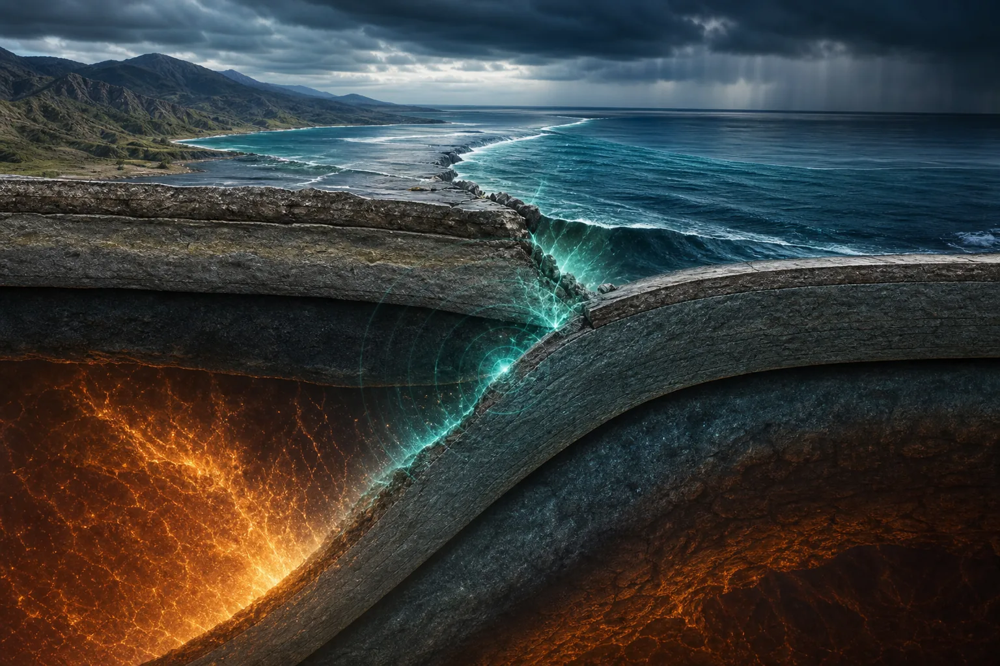
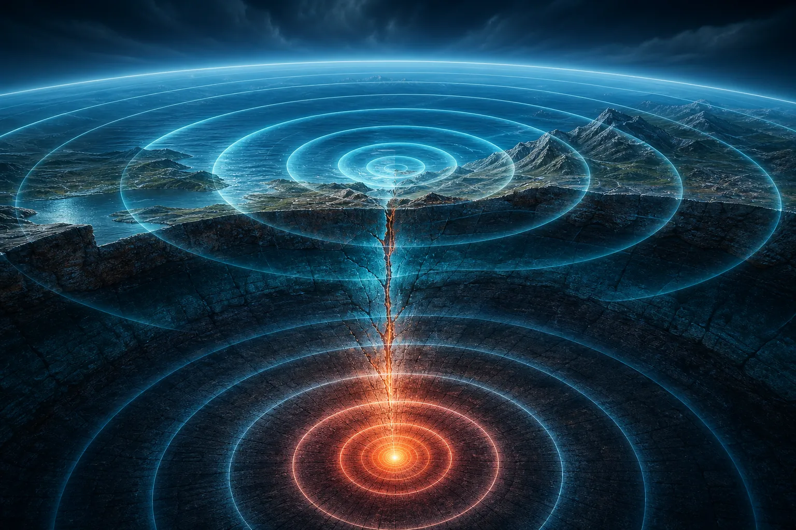
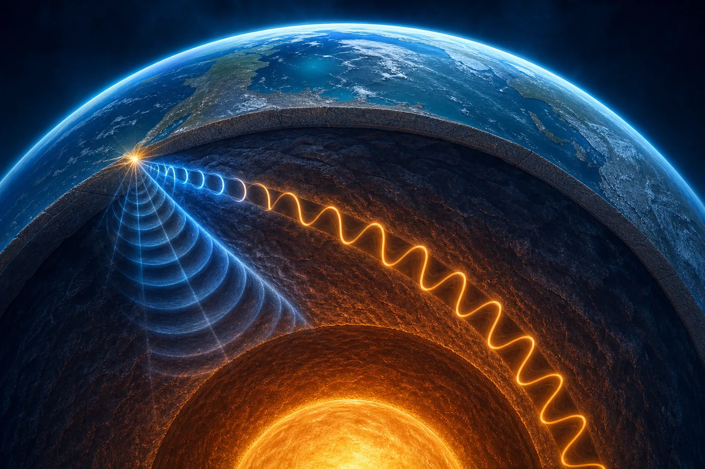
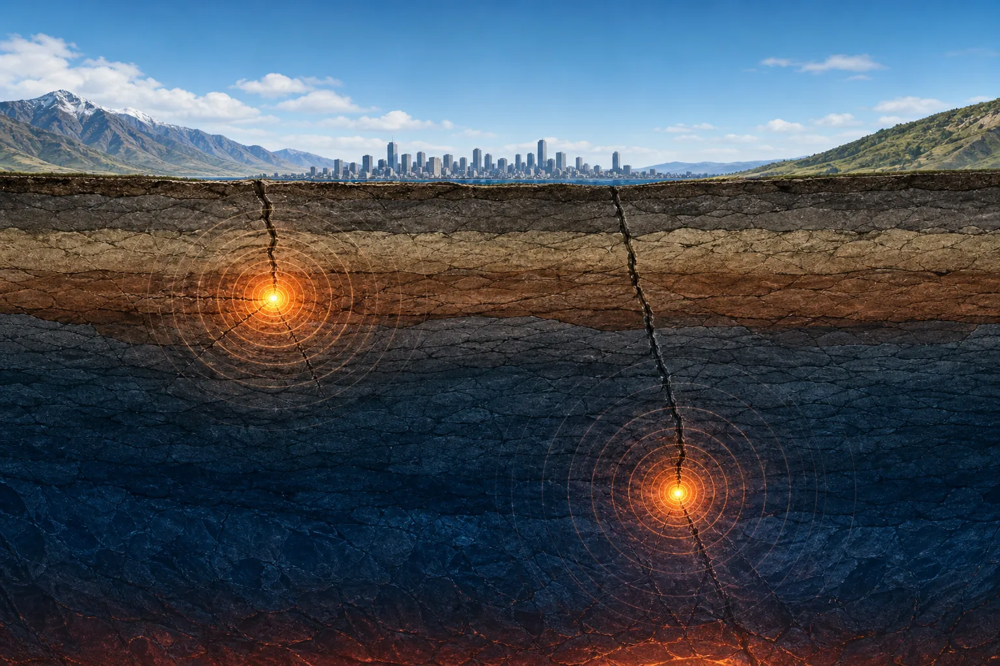
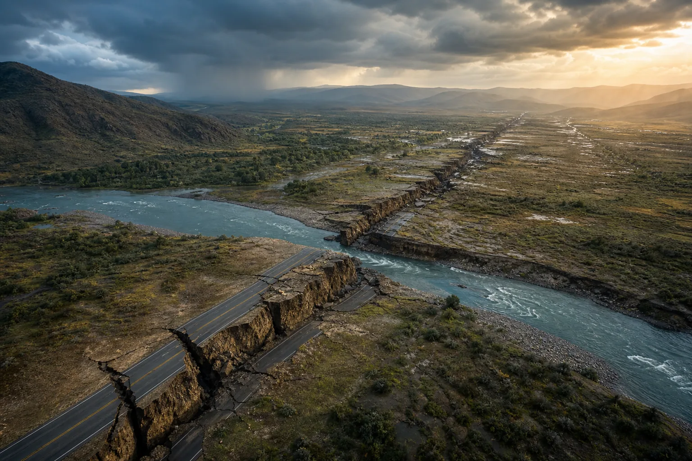
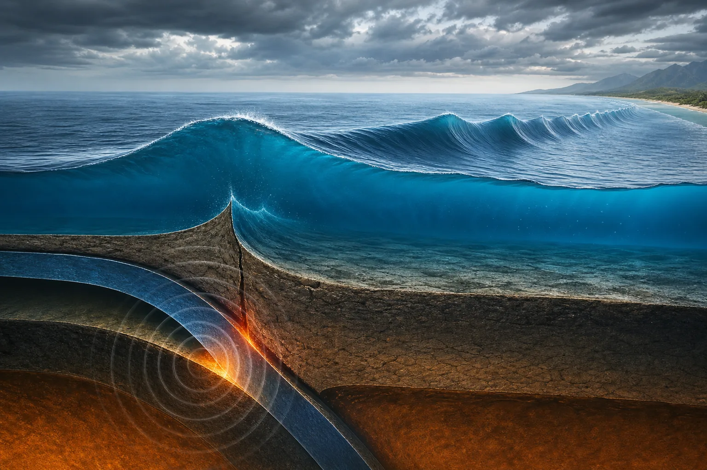

Últimos 7 días
Datos globales en tiempo real
La Tierra se mueve.
Nosotros la medimos.
Explora la actividad sísmica mundial registrada por el USGS, detecta patrones y observa qué está ocurriendo en Chile.
Explorar datos ↓Esperando datos...
—sismos
Pulso de la última hora
Estado sísmico global
Las métricas se calculan localmente a partir del feed del USGS.
Catálogo de los últimos 7 días
Explorador de eventos
Ajusta el período y combina los filtros para explorar los registros disponibles.
Norte · Sur
Monitor local
Pulso sísmico de Chile
Eventos de los últimos 7 días representados sobre el territorio.
—eventos detectados
Prepararse salva vidas
¿Sabes qué hacer durante un sismo?
Mantén este plan a mano, practícalo con tu familia y adáptalo a las condiciones de tu vivienda y comunidad.
⌄
Agáchate, cúbrete y afírmate
Como si buscaras refugio debajo de una mesa fuerte: baja tu centro de gravedad, protege cabeza y cuello, y sujétate de un elemento firme.
Si la construcción es de adobe o no es sismo resistente, SENAPRED recomienda evacuar hacia un área segura exterior, lejos de edificios, postes y cables.
- 01
Agáchate
Baja tu centro de gravedad y mantén el equilibrio.
- 02
Cúbrete
Protege cabeza y cuello bajo una mesa firme.
- 03
Afírmate
Sujeta la mesa hasta que termine el movimiento.
En la calleAléjate de edificios, postes y cables.
En la costaSi cuesta mantenerse en pie, evacúa a un punto seguro.
Al terminarUsa escaleras, corta suministros y sigue información oficial.
48 a 72 horas
Mochila de emergencia
Marca lo que ya tienes. La lista queda guardada en este dispositivo.
0 de 9 elementos preparados
Plan Familia Preparada
Define un punto de encuentro
Dibuja tu vivienda, marca dos salidas y acuerda dónde se reunirán si se separan.
Ruta A: salida principalRuta B: salida alternativa
- 1. RolesQuién lleva la mochila y ayuda a niños, mayores o mascotas.
- 2. Contacto externoElijan una persona fuera de la zona para centralizar mensajes.
- 3. Dos rutasDefine una alternativa si la salida principal está bloqueada.
- 4. SimulacroPractiquen el plan y actualícenlo periódicamente.
Atlas visual
Así se mueve la Tierra
Seis ilustraciones originales para comprender los procesos que ocurren bajo nuestros pies.

01 · Corteza
La corteza bajo presión
Las placas acumulan tensión hasta que la roca se fractura y libera energía.

02 · Magnitud
Energía en expansión
La magnitud representa la energía liberada en el foco del terremoto.

03 · Ondas
Ondas P y S
Distintas vibraciones recorren el planeta a velocidades y movimientos diferentes.

04 · Profundidad
Superficial o profundo
La profundidad del foco influye en cómo se percibe el movimiento en la superficie.

05 · Falla
El terreno se desplaza
Una falla de rumbo mueve horizontalmente caminos, ríos y formaciones rocosas.

06 · Tsunami
El océano se desplaza
El levantamiento brusco del fondo marino mueve la columna de agua y genera olas.